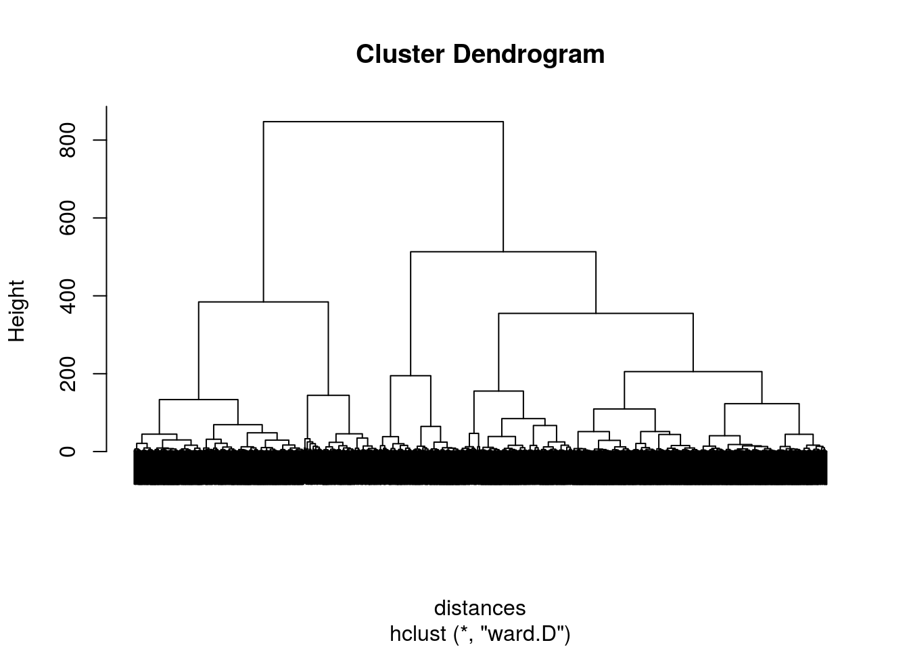

Clustering can be used for market segmentation, the idea of dividing airline passengers into small, more similar groups, and then designing a marketing strategy specifically for each group. In this analysis, I’ll see how this idea can be applied to retail consumer data.
I’ll use the dataset Households.csv.xz, which contains data collected over two years for a group of 2,500 households. Each row (observation) in our dataset represents a unique household. The dataset contains the following variables:
- NumVisits = the number of times the household visited the retailer
- AvgProdCount = the average number of products purchased per transaction
- AvgDiscount = the average discount per transaction from coupon usage (in %) - NOTE: Do not divide this value by 100!
- AvgSalesValue = the average sales value per transaction
- MorningPct = the percentage of visits in the morning (8am - 1:59pm)
- AfternoonPct = the percentage of visits in the afternoon (2pm - 7:59pm)
Note that some visits can occur outside of morning and afternoon hours. That is, visits from 8pm - 7:59am are possible.
This dataset was derived from source files provided by dunnhumby, a customer science company based in the UK.
Problem 1 - Reading in the data
Read the dataset Households.csv.xz into R.
HouseHolds <- read.csv("Households.csv.xz")
str(HouseHolds)'data.frame': 2500 obs. of 6 variables:
$ NumVisits : int 86 45 47 30 40 250 59 113 20 9 ...
$ AvgProdCount : num 20.08 15.87 19.62 10.03 5.55 ...
$ AvgDiscount : num 8.11 7.44 14.37 3.85 2.96 ...
$ AvgSalesValue: num 50.4 43.4 56.5 40 19.5 ...
$ MorningPct : num 46.51 8.89 14.89 13.33 2.5 ...
$ AfternoonPct : num 51.2 60 76.6 56.7 67.5 ...summary(HouseHolds) NumVisits AvgProdCount AvgDiscount AvgSalesValue
Min. : 1.0 Min. : 1.186 Min. : 0.089 Min. : 2.388
1st Qu.: 39.0 1st Qu.: 6.123 1st Qu.: 3.006 1st Qu.: 18.329
Median : 79.0 Median : 8.979 Median : 4.865 Median : 27.417
Mean : 110.6 Mean :10.291 Mean : 5.713 Mean : 31.621
3rd Qu.: 142.2 3rd Qu.:13.116 3rd Qu.: 7.327 3rd Qu.: 40.546
Max. :1300.0 Max. :56.600 Max. :47.176 Max. :165.829
MorningPct AfternoonPct
Min. : 0.00 Min. : 0.00
1st Qu.: 16.67 1st Qu.: 42.20
Median : 26.09 Median : 52.00
Mean : 28.73 Mean : 51.45
3rd Qu.: 37.17 3rd Qu.: 61.29
Max. :100.00 Max. :100.00 head(HouseHolds) NumVisits AvgProdCount AvgDiscount AvgSalesValue MorningPct AfternoonPct
1 86 20.08140 8.105116 50.35070 46.511628 51.16279
2 45 15.86667 7.444222 43.42978 8.888889 60.00000
3 47 19.61702 14.365106 56.45128 14.893617 76.59574
4 30 10.03333 3.855000 40.00367 13.333333 56.66667
5 40 5.55000 2.958250 19.47650 2.500000 67.50000
6 250 7.16400 3.313360 23.98464 25.600000 61.20000How many households have logged transactions at the retailer only in the morning?
nrow(subset(HouseHolds, MorningPct == 100))[1] 4How many households have logged transactions at the retailer only in the afternoon?
nrow(subset(HouseHolds, AfternoonPct == 100))[1] 13Problem 2 - Descriptive statistics
Of the households that spend more than $150 per transaction on average, what is the minimum average discount per transaction?
min(subset(HouseHolds, AvgSalesValue > 150)$AvgDiscount)[1] 15.64607Of the households who have an average discount per transaction greater than 25%, what is the minimum average sales value per transaction?
min(subset(HouseHolds, AvgDiscount > 25)$AvgSalesValue)[1] 50.1175What proportion of households visited the retailer at least 300 times?
nrow(subset(HouseHolds, NumVisits >= 300)) / nrow(HouseHolds)[1] 0.0592Problem 3 - Importance of Normalizing
When clustering data, its often important to normalize the variables so that they are all on the same scale.
If you clustered this dataset without normalizing, which variable would you expect to dominate in the distance calculations?
summary(HouseHolds) NumVisits AvgProdCount AvgDiscount AvgSalesValue
Min. : 1.0 Min. : 1.186 Min. : 0.089 Min. : 2.388
1st Qu.: 39.0 1st Qu.: 6.123 1st Qu.: 3.006 1st Qu.: 18.329
Median : 79.0 Median : 8.979 Median : 4.865 Median : 27.417
Mean : 110.6 Mean :10.291 Mean : 5.713 Mean : 31.621
3rd Qu.: 142.2 3rd Qu.:13.116 3rd Qu.: 7.327 3rd Qu.: 40.546
Max. :1300.0 Max. :56.600 Max. :47.176 Max. :165.829
MorningPct AfternoonPct
Min. : 0.00 Min. : 0.00
1st Qu.: 16.67 1st Qu.: 42.20
Median : 26.09 Median : 52.00
Mean : 28.73 Mean : 51.45
3rd Qu.: 37.17 3rd Qu.: 61.29
Max. :100.00 Max. :100.00 NumVisits
Problem 4 - Normalizing the Data
Normalize all of the variables in the dataset (Note that these codes assume that our dataset is called “Households”, and create the normalized dataset “HouseholdsNorm”. You can change the names to anything you want by editing the codes.)
library(caret)Loading required package: latticeLoading required package: ggplot2preproc <- preProcess(HouseHolds)
HouseHoldsNorm <- predict(preproc, HouseHolds)(Remember that for each variable, the normalization process subtracts the mean and divides by the standard deviation. In our normalized dataset, all of the variables should have mean 0 and standard deviation 1.
summary(HouseHoldsNorm) NumVisits AvgProdCount AvgDiscount AvgSalesValue
Min. :-0.9475 Min. :-1.5239 Min. :-1.4010 Min. :-1.5342
1st Qu.:-0.6190 1st Qu.:-0.6976 1st Qu.:-0.6743 1st Qu.:-0.6976
Median :-0.2731 Median :-0.2197 Median :-0.2112 Median :-0.2206
Mean : 0.0000 Mean : 0.0000 Mean : 0.0000 Mean : 0.0000
3rd Qu.: 0.2737 3rd Qu.: 0.4728 3rd Qu.: 0.4021 3rd Qu.: 0.4684
Max. :10.2828 Max. : 7.7500 Max. :10.3293 Max. : 7.0432
MorningPct AfternoonPct
Min. :-1.6779 Min. :-3.22843
1st Qu.:-0.7047 1st Qu.:-0.58006
Median :-0.1546 Median : 0.03458
Mean : 0.0000 Mean : 0.00000
3rd Qu.: 0.4926 3rd Qu.: 0.61755
Max. : 4.1617 Max. : 3.04658 What is the maximum value of NumVisits in the normalized dataset? #### 10.2828
What is the minimum value of AfternoonPct in the normalized dataset? #### -3.22843
Create a dendrogram of our data:
set.seed(200)
distances <- dist(HouseHoldsNorm, method = "euclidean")
ClusterShoppers <- hclust(distances, method = "ward.D")
plot(ClusterShoppers, labels = FALSE)
Problem 5 - Interpreting the Dendrogram
Based on the dendrogram, how many clusters do you think would be appropriate for this problem? #### 2, 3, 5
Problem 6 - K-means Clustering
Run the k-means clustering algorithm on our normalized dataset, selecting 10 clusters. Right before using the kmeans function, Remember “set.seed(200)”.
set.seed(200)
k <- 10
KMC <- kmeans(HouseHoldsNorm, centers = k, iter.max = 1000)
str(KMC)List of 9
$ cluster : int [1:2500] 7 3 1 3 5 6 1 1 3 8 ...
$ centers : num [1:10, 1:6] -0.248 -0.483 -0.234 -0.18 -0.246 ...
..- attr(*, "dimnames")=List of 2
.. ..$ : chr [1:10] "1" "2" "3" "4" ...
.. ..$ : chr [1:6] "NumVisits" "AvgProdCount" "AvgDiscount" "AvgSalesValue" ...
$ totss : num 14994
$ withinss : num [1:10] 628 449 700 282 580 ...
$ tot.withinss: num 4828
$ betweenss : num 10166
$ size : int [1:10] 246 51 490 118 504 226 141 284 52 388
$ iter : int 5
$ ifault : int 0
- attr(*, "class")= chr "kmeans"kmeansGroups <- KMC$cluster
table(kmeansGroups)kmeansGroups
1 2 3 4 5 6 7 8 9 10
246 51 490 118 504 226 141 284 52 388 How many observations are in the smallest cluster?
min(table(kmeansGroups))[1] 5151
How many observations are in the largest cluster?
max(table(kmeansGroups))[1] 504504
Problem 7 - Understanding the Clusters
Now, use the cluster assignments from k-means clustering together with the cluster centroids to explore the next few questions.
kmeans1 <- subset(HouseHolds, kmeansGroups == 1)
kmeans2 <- subset(HouseHolds, kmeansGroups == 2)
kmeans3 <- subset(HouseHolds, kmeansGroups == 3)
kmeans4 <- subset(HouseHolds, kmeansGroups == 4)
kmeans5 <- subset(HouseHolds, kmeansGroups == 5)
kmeans6 <- subset(HouseHolds, kmeansGroups == 6)
kmeans7 <- subset(HouseHolds, kmeansGroups == 7)
kmeans8 <- subset(HouseHolds, kmeansGroups == 8)
kmeans9 <- subset(HouseHolds, kmeansGroups == 9)
kmeans10 <- subset(HouseHolds, kmeansGroups == 10)
colMeans(kmeans1) NumVisits AvgProdCount AvgDiscount AvgSalesValue MorningPct
81.89431 19.11594 10.92924 59.49868 22.76746
AfternoonPct
61.93939 colMeans(kmeans2) NumVisits AvgProdCount AvgDiscount AvgSalesValue MorningPct
54.70588 32.62351 19.65784 99.73684 32.15593
AfternoonPct
49.41508 colMeans(kmeans3) NumVisits AvgProdCount AvgDiscount AvgSalesValue MorningPct
83.508163 12.081068 6.881078 37.391552 25.609449
AfternoonPct
51.185788 colMeans(kmeans4) NumVisits AvgProdCount AvgDiscount AvgSalesValue MorningPct
89.788136 7.053082 3.877403 21.175564 71.391580
AfternoonPct
22.584436 colMeans(kmeans5) NumVisits AvgProdCount AvgDiscount AvgSalesValue MorningPct
82.18254 5.89608 2.90764 17.51880 19.36659
AfternoonPct
55.03936 colMeans(kmeans6) NumVisits AvgProdCount AvgDiscount AvgSalesValue MorningPct
281.796460 8.117065 4.297144 25.446228 29.851517
AfternoonPct
51.583481 colMeans(kmeans7) NumVisits AvgProdCount AvgDiscount AvgSalesValue MorningPct
99.886525 15.469831 9.343551 50.447122 53.462000
AfternoonPct
35.836861 colMeans(kmeans8) NumVisits AvgProdCount AvgDiscount AvgSalesValue MorningPct
80.288732 9.992614 5.288399 29.327693 13.350751
AfternoonPct
74.066827 colMeans(kmeans9) NumVisits AvgProdCount AvgDiscount AvgSalesValue MorningPct
626.903846 5.203533 2.632325 16.278150 24.641085
AfternoonPct
48.731981 colMeans(kmeans10) NumVisits AvgProdCount AvgDiscount AvgSalesValue MorningPct
70.729381 6.479314 3.527893 19.688575 37.377204
AfternoonPct
38.916046 Which cluster best fits the description “morning shoppers stopping in to make a quick purchase”? #### Cluster 4
Problem 8 - Understanding the Clusters
Which cluster best fits the description “shoppers with high average product count and high average value per visit”? #### Cluster 2
Problem 9 - Understanding the Clusters
Which cluster best fits the description “frequent shoppers with low value per visit”? #### Cluster 9
Problem 10 - Random Behavior
If we ran hierarchical clustering a second time without making any additional calls to set.seed, we would expect: #### Identical results to the first hierarchical clustering
If we ran k-means clustering a second time without making any additional calls to set.seed, we would expect: #### Different results from the first k-means clustering
If we ran k-means clustering a second time, again running the code set.seed(200) right before doing the clustering, we would expect: #### Identical results to the first k-means clustering
If we ran k-means clustering a second time, running the code set.seed(100) right before doing the clustering, we would expect: #### Different results from the first k-means clustering
Problem 11 - The Number of Clusters
Suppose the marketing department at the retail store decided that the 10 clusters were too specific, and they wanted more general clusters to describe the consumer base.
Would they want to increase or decrease the number of clusters? #### Decrease the number of clusters
Problem 12 - Increasing the Number of Clusters
Run the k-means clustering algorithm again, this time selecting 5 clusters. Right before the “kmeans” function, set the random seed to 5000.
set.seed(5000)
k <- 5
KMC.5 <- kmeans(HouseHoldsNorm, centers = k, iter.max = 1000)
str(KMC.5)List of 9
$ cluster : int [1:2500] 5 5 1 5 2 2 5 5 5 2 ...
$ centers : num [1:5, 1:6] -0.398 -0.193 -0.169 2.695 -0.176 ...
..- attr(*, "dimnames")=List of 2
.. ..$ : chr [1:5] "1" "2" "3" "4" ...
.. ..$ : chr [1:6] "NumVisits" "AvgProdCount" "AvgDiscount" "AvgSalesValue" ...
$ totss : num 14994
$ withinss : num [1:5] 1264 1838 1336 754 1604
$ tot.withinss: num 6795
$ betweenss : num 8199
$ size : int [1:5] 182 994 428 172 724
$ iter : int 7
$ ifault : int 0
- attr(*, "class")= chr "kmeans"kmeansGroups.5 <- KMC.5$cluster
table(kmeansGroups.5)kmeansGroups.5
1 2 3 4 5
182 994 428 172 724 How many observations are in the smallest cluster?
min(table(kmeansGroups.5))[1] 172172
How many observations are in the largest cluster?
max(table(kmeansGroups.5))[1] 994994
Problem 13 - Describing the Clusters
Use the cluster assignments from k-means clustering with 5 clusters, which cluster best fits the description “frequent shoppers with low value per visit”?
kmeans1.5 <- subset(HouseHolds, kmeansGroups.5 == 1)
kmeans2.5 <- subset(HouseHolds, kmeansGroups.5 == 2)
kmeans3.5 <- subset(HouseHolds, kmeansGroups.5 == 3)
kmeans4.5 <- subset(HouseHolds, kmeansGroups.5 == 4)
kmeans5.5 <- subset(HouseHolds, kmeansGroups.5 == 5)
colMeans(kmeans1.5) NumVisits AvgProdCount AvgDiscount AvgSalesValue MorningPct
64.60989 24.47666 14.69849 76.09221 31.49236
AfternoonPct
53.37519 colMeans(kmeans2.5) NumVisits AvgProdCount AvgDiscount AvgSalesValue MorningPct
88.274648 6.573304 3.355126 19.679329 21.516913
AfternoonPct
53.900113 colMeans(kmeans3.5) NumVisits AvgProdCount AvgDiscount AvgSalesValue MorningPct
91.095794 8.541218 4.910884 26.956499 54.594773
AfternoonPct
32.958057 colMeans(kmeans4.5) NumVisits AvgProdCount AvgDiscount AvgSalesValue MorningPct
422.273256 7.074807 3.710112 22.317813 27.386172
AfternoonPct
51.043708 colMeans(kmeans5.5) NumVisits AvgProdCount AvgDiscount AvgSalesValue MorningPct
90.276243 13.628410 7.640804 41.803608 22.980428
AfternoonPct
58.626883 Cluster 4
Problem 14 - Understanding Centroids
Why do we typically use cluster centroids to describe the clusters? #### The cluster centroid captures the average behavior in the cluster, and can be used to summarize the general pattern in the cluster.
Problem 15 - Using a Visualization
Which of the following visualizations could be used to observe the distribution of NumVisits, broken down by cluster? #### - A box plot of the variable NumVisits, subdivided by cluster #### - ggplot with NumVisits on the x-axis and the cluster number on the y-axis, plotting with geom_point()
)